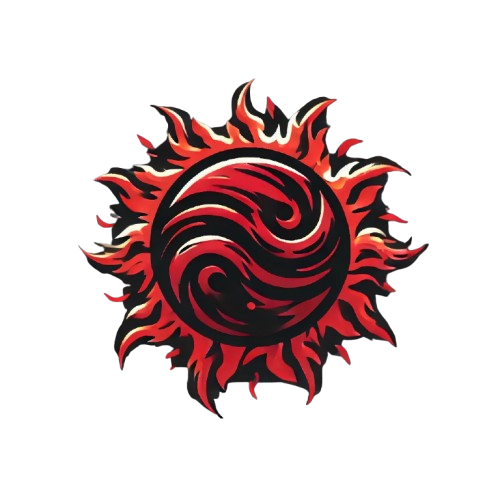

BEM-VINDO AO JOGO DE PLATAFORMA INSPIRADO EM UM LIVRO DE SUCESSO!
CONHEÇA KILL THE SUN
SAIBA MAIS SOBRE
A LORE DO LIVRO QUE INSPIROU O JOGO
UMA BREVE HISTÓRIA DO LIVRO

A Terra encontra-se em um estado pós-apocalíptico, milhares de anos após seres aterrorizantes chamados Espectros destruírem o mundo. Ao longo dos milênios, a humanidade tentou se reconstruir diversas vezes, mas o passado foi esquecido — e agora, os Espectros reinam supremos.
Um jovem com amnésia vive nas favelas da enigmática Cidade do Fungo Carmesim. Com esforço e determinação, ele se torna forte o suficiente para se qualificar para um dos trabalhos mais prestigiados: ser um Extrator de Zephyx — aqueles que colhem os poderes dos Espectros. No entanto, um antigo encontro com uma dessas criaturas o torna inelegível. É então que um homem misterioso surge, mudando para sempre o rumo de seu destino.
Ao lado de alianças improváveis, eles precisam capturar os Espectros — pois essas criaturas são tanto a chave para a liberdade da humanidade quanto a fonte de uma energia infinita.